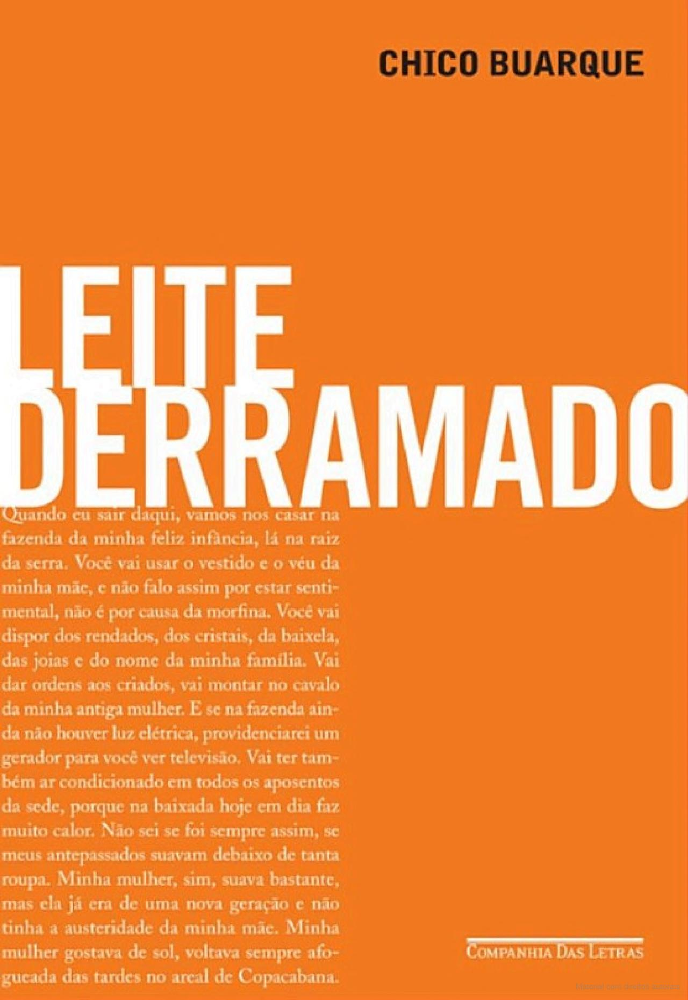
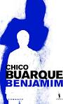

Livraria do Chiquinho
Bem-vindos à Livraria Chiquinho, um tributo à obra literária de Chico Buarque! Embora não exponhamos livros fisicamente, nossa apresentação mergulha na rica produção de um mestre. Cinco títulos cuidadosamente selecionados revelam a versatilidade de sua escrita: romances que exploram a alma humana, peças que refletem a sociedade com ironia e poesia, e contos que encantam pela sensibilidade única.
Estorvo (1990)
 Sinopse: *Estorvo*, de Chico Buarque, é uma peça teatral que retrata a vida de um homem que se sente um estorvo para a própria família. A trama se desenvolve em torno de um pai que, após perder o emprego, se torna um peso para sua família e se sente cada vez mais marginalizado. A peça aborda temas como a solidão, a perda de identidade, a crise da família e a dificuldade de lidar com o fracasso. Com humor ácido e diálogos perspicazes, *Estorvo* faz uma crítica social mordaz à sociedade contemporânea. É uma obra que nos convida à reflexão sobre os desafios da vida moderna e sobre a importância de reconhecer o valor de cada indivíduo, independentemente de suas circunstâncias.
Sinopse: *Estorvo*, de Chico Buarque, é uma peça teatral que retrata a vida de um homem que se sente um estorvo para a própria família. A trama se desenvolve em torno de um pai que, após perder o emprego, se torna um peso para sua família e se sente cada vez mais marginalizado. A peça aborda temas como a solidão, a perda de identidade, a crise da família e a dificuldade de lidar com o fracasso. Com humor ácido e diálogos perspicazes, *Estorvo* faz uma crítica social mordaz à sociedade contemporânea. É uma obra que nos convida à reflexão sobre os desafios da vida moderna e sobre a importância de reconhecer o valor de cada indivíduo, independentemente de suas circunstâncias.
Budapeste (2003)
 Sinopse:Budapeste é um romance que acompanha a jornada de um homem que viaja para a capital húngara em busca de um passado que o assombra. O narrador, um escritor em crise, tenta desvendar os mistérios de sua própria história e de uma mulher que o marcou profundamente. A trama se desenvolve em meio a lembranças, encontros e desencontros, e a cidade de Budapeste serve como pano de fundo para uma viagem introspectiva e emocionante. O livro explora temas como a memória, o amor, a perda e a busca pela identidade.
Sinopse:Budapeste é um romance que acompanha a jornada de um homem que viaja para a capital húngara em busca de um passado que o assombra. O narrador, um escritor em crise, tenta desvendar os mistérios de sua própria história e de uma mulher que o marcou profundamente. A trama se desenvolve em meio a lembranças, encontros e desencontros, e a cidade de Budapeste serve como pano de fundo para uma viagem introspectiva e emocionante. O livro explora temas como a memória, o amor, a perda e a busca pela identidade.
Leite Derramado (2009)

Sinopse:Leite Derramado é uma saga familiar que se estende por várias gerações, retratando a história do Brasil através dos olhos de um velho e amargurado narrador. O romance acompanha a decadência social e econômica de uma família tradicional, marcada por conflitos, segredos e a busca por um lugar no mundo. A trama se desenvolve em meio a lembranças e reflexões sobre o passado, o presente e o futuro, e o título faz referência a um momento crucial na vida do protagonista, que simboliza a perda e a impossibilidade de recomeçar.
Essa Gente (2010)
 Sinopse: Essa Gente é um romance que retrata o Brasil contemporâneo através da história de um escritor em decadência, Manuel Duarte. O livro é uma crítica social mordaz à sociedade brasileira, marcada por desigualdade, violência, corrupção e a crise da democracia. A trama se desenvolve em meio a textos curtos, mensagens, diálogos e reflexões sobre o país, e o título reflete a desilusão do protagonista com a humanidade.
Sinopse: Essa Gente é um romance que retrata o Brasil contemporâneo através da história de um escritor em decadência, Manuel Duarte. O livro é uma crítica social mordaz à sociedade brasileira, marcada por desigualdade, violência, corrupção e a crise da democracia. A trama se desenvolve em meio a textos curtos, mensagens, diálogos e reflexões sobre o país, e o título reflete a desilusão do protagonista com a humanidade.
Benjamim (2012)

Sinopse:Benjamim é um romance que narra a história de um ex-modelo fotográfico em decadência, obcecado pela morte de sua antiga amante, Castana Beatriz. A trama se desenvolve em meio a lembranças, delírios e a busca por respostas para um passado obscuro. O livro explora temas como a memória, a culpa, a obsessão e a fragilidade da mente humana. O estilo narrativo de Chico Buarque cria uma atmosfera opressiva e intrigante, que prende o leitor até o final.